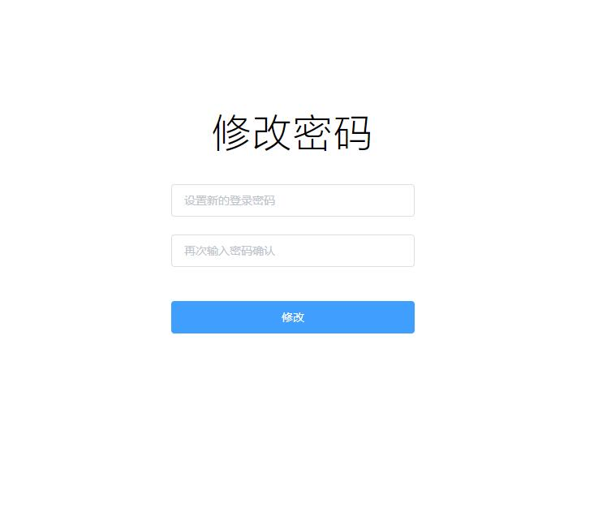
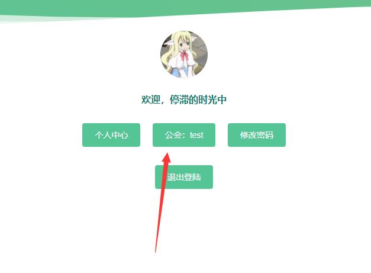
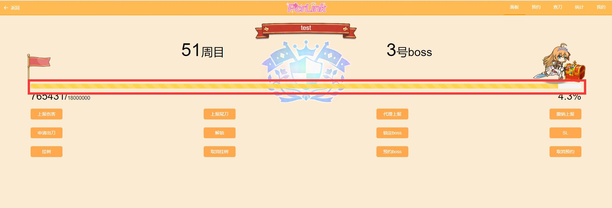
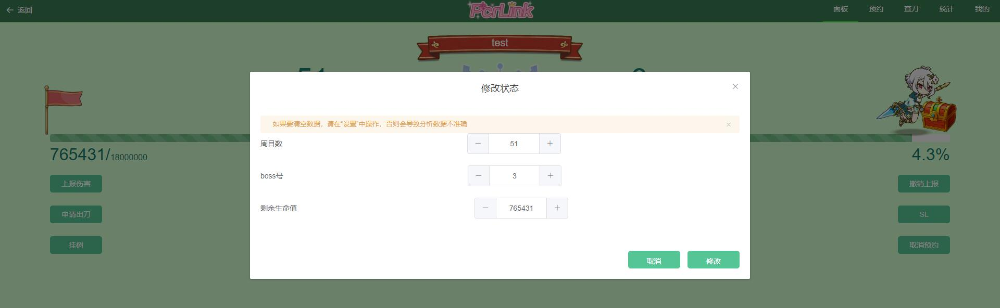
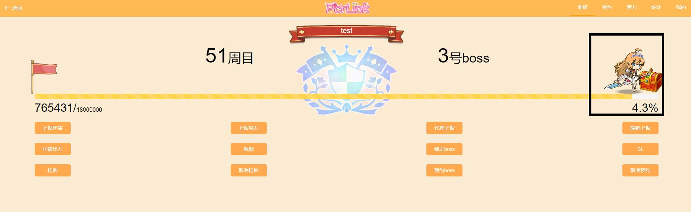
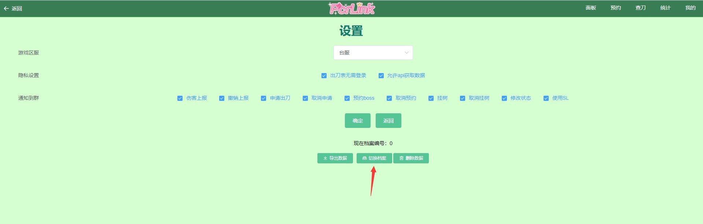
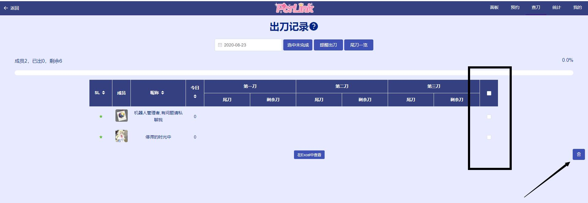

会战功能web界面简单描述
- 私聊机器人,发q登录
- 机器人发出来的链接复制到手机的浏览器里打开,别在qq里打开
- 登录以后请改一下密码.

忘记了密码也没事,私聊机器人就能登录了,然后重新打开机器人发的链接
- 选择相对应的公会
- 进入首页会看见这个界面

里面的红色框是血量条,点击就能修改血量

- 黑色框里的人物是设置,点击人物就能进入设置
- 点击设置后,里面有这些设置.红色箭头的切换档案和右边的删除数据,是指新建一个公会战档案数据和删除全部档案
- 如果想要删除成员,请点击右上角的查刀,然后点击黑色框里的勾勾.然后点击图片右下角的黑色箭头就能删除成员